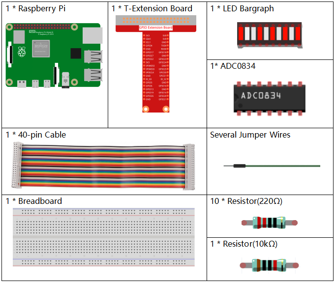

Note
Bonjour et bienvenue dans la communauté SunFounder Raspberry Pi & Arduino & ESP32 sur Facebook ! Plongez au cœur des projets Raspberry Pi, Arduino et ESP32 avec d’autres passionnés.
Pourquoi nous rejoindre ?
Support d’experts : Résolvez vos problèmes après-vente et surmontez les défis techniques grâce à l’aide de notre communauté et de notre équipe.
Apprendre et partager : Échangez des astuces et des tutoriels pour améliorer vos compétences.
Aperçus exclusifs : Soyez informé en avant-première des nouvelles annonces de produits et découvrez les coulisses.
Remises spéciales : Bénéficiez de réductions exclusives sur nos produits les plus récents.
Promotions festives et cadeaux : Participez à nos jeux-concours et à nos promotions spéciales pendant les fêtes.
👉 Prêt à explorer et à créer avec nous ? Cliquez sur [Ici] et rejoignez-nous dès aujourd’hui !
3.1.5 Indicateur de Batterie
Introduction
Dans ce projet, nous allons réaliser un indicateur de batterie capable d’afficher visuellement le niveau de charge sur un Bargraph LED.
Composants nécessaires
Pour ce projet, nous aurons besoin des composants suivants.
Schéma de câblage
T-Board Name |
physical |
wiringPi |
BCM |
GPIO17 |
Pin 11 |
0 |
17 |
GPIO18 |
Pin 12 |
1 |
18 |
GPIO27 |
Pin 13 |
2 |
27 |
GPIO25 |
Pin 22 |
6 |
25 |
GPIO12 |
Pin 32 |
26 |
12 |
GPIO16 |
Pin 36 |
27 |
16 |
GPIO20 |
Pin 38 |
28 |
20 |
GPIO21 |
Pin 40 |
29 |
21 |
GPIO5 |
Pin 29 |
21 |
5 |
GPIO6 |
Pin 31 |
22 |
6 |
GPIO13 |
Pin 33 |
23 |
13 |
GPIO19 |
Pin 35 |
24 |
19 |
GPIO26 |
Pin 37 |
25 |
26 |
Procédures expérimentales
Étape 1 : Construisez le circuit.

Étape 2 : Allez dans le répertoire du code.
cd ~/davinci-kit-for-raspberry-pi/python-pi5
Étape 3 : Exécutez le fichier exécutable.
sudo python3 3.1.5_BatteryIndicator.py
Après l’exécution du programme, connectez séparément le troisième pin de l’ADC0834 et le GND à deux fils, puis reliez-les aux deux bornes de la batterie. Vous verrez que les LED correspondantes sur le Bargraph LED s’allument pour indiquer le niveau de charge (plage de mesure : 0-5V).
Avertissement
En cas d’erreur RuntimeError: Cannot determine SOC peripheral base address, veuillez vous référer à Si gpiozero ne fonctionne pas.
Code
Note
Vous pouvez Modifier/Réinitialiser/Copier/Exécuter/Arrêter le code ci-dessous. Mais avant cela, vous devez vous rendre dans le chemin source du code comme davinci-kit-for-raspberry-pi/python-pi5. Après avoir modifié le code, vous pouvez l’exécuter directement pour voir le résultat.
#!/usr/bin/env python3
from gpiozero import LED
import ADC0834
import time
# Liste des broches GPIO auxquelles les LEDs sont connectées
ledPins = [25, 12, 16, 20, 21, 5, 6, 13, 19, 26]
# Initialisation des objets LED pour chaque broche dans la liste
leds = [LED(pin) for pin in ledPins]
# Configuration du module ADC0834
ADC0834.setup()
def LedBarGraph(value):
# Éteint toutes les LEDs
for i in range(10):
leds[i].off()
# Allume les LEDs jusqu'à la valeur spécifiée
for i in range(value):
leds[i].on()
try:
# Boucle principale pour mettre à jour en continu le Bargraph LED
while True:
# Lecture de la valeur analogique depuis l'ADC0834
analogVal = ADC0834.getResult()
# Conversion de la valeur analogique en niveau du Bargraph LED
LedBarGraph(int(analogVal/25))
except KeyboardInterrupt:
# Éteint toutes les LEDs lorsque le programme est interrompu
for i in range(10):
leds[i].off()
Explication du Code
Cette section importe les bibliothèques nécessaires. La bibliothèque
gpiozeroest utilisée pour contrôler les LED,ADC0834pour l’interface avec le module ADC, ettimepour les opérations liées au temps.#!/usr/bin/env python3 from gpiozero import LED import ADC0834 import time
Définit les broches GPIO auxquelles les LED sont connectées et initialise un tableau d’objets LED pour chaque broche, facilitant ainsi le contrôle individuel de chaque LED.
# Liste des broches GPIO auxquelles les LED sont connectées ledPins = [25, 12, 16, 20, 21, 5, 6, 13, 19, 26] # Initialise les objets LED pour chaque broche de la liste leds = [LED(pin) for pin in ledPins]
Initialise le module ADC0834 pour la conversion analogique-numérique.
# Configuration du module ADC0834 ADC0834.setup()
Cette fonction éteint toutes les LED, puis allume un nombre de LED correspondant à la valeur d’entrée, créant ainsi une représentation graphique sous forme de barres.
def LedBarGraph(value): # Éteint toutes les LED for i in range(10): leds[i].off() # Allume les LED jusqu'à la valeur spécifiée for i in range(value): leds[i].on()
Lit en continu la valeur analogique depuis l’ADC0834 et met à jour le bargraph LED en conséquence. La valeur analogique est mise à l’échelle pour correspondre à une plage de 0 à 10 pour les 10 LED.
try: # Boucle principale pour mettre à jour en continu le bargraph LED while True: # Lit la valeur analogique depuis l'ADC0834 analogVal = ADC0834.getResult() # Convertit la valeur analogique en niveau pour le bargraph LED LedBarGraph(int(analogVal/25))
S’assure que toutes les LED sont éteintes lorsque le programme est interrompu (par exemple, en appuyant sur Ctrl+C).
except KeyboardInterrupt: # Éteint toutes les LED lorsque le programme est interrompu for i in range(10): leds[i].off()